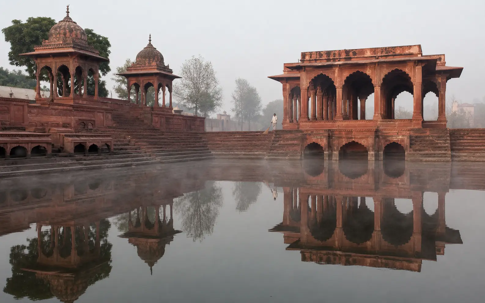

Agra To Bateshwar Taxi₹3,000 Round Trip · AC Sedan
70 KM · A Half Day From Agra
Over 100 Shiva Temples On The Ghats

The Quietest Temple Trip We Run
Most people who book this have never been. Bateshwar sits on the Yamuna about 70 km from Agra, and what is there is unusual: over a hundred Shiva temples standing in a continuous row along the riverfront ghats. There are no queues to speak of and nothing to climb. ₹3,000 round trip in an AC sedan, out and back in a morning.
Agra To Bateshwar Taxi At A Glance
~70 KM
One Way, Via NH-19
1.5–2 HRS
Each Way
₹3,000
Round Trip, AC Sedan
100+
Shiva Temples On The Ghats
Agra To Bateshwar Taxi Fare
Round-trip fares for the whole vehicle, with the driver waiting at the temples throughout.
| Cab Type | Seats | Round Trip |
|---|---|---|
| AC Sedan (Dzire / Amaze) | 4 | ₹3,000 |
| AC SUV (Ertiga) | 6 | ₹3,800 |
| AC SUV (Innova) | 7 | ₹4,500 |
Fares cover fuel and driver charges. Tolls and parking are paid by you at actuals, and we tell you the expected toll before you book. There is no surge pricing. A one-way trip is available — ask on WhatsApp, as we do not publish a one-way figure for this route. See the full Agra taxi fare list for every other route.
What There Is To See
The Shiva Temple Row
Over a hundred temples in a continuous line along the riverbank, each one different in size and style. Darshan is unhurried — early morning is when the ghats are quietest and the light off the water is at its best.
The Yamuna Ghats
Open, calm and far less crowded than the ghats at Mathura. A slow walk along the riverside after darshan is genuinely part of the visit rather than an add-on.
A Jain Pilgrimage Site
Bateshwar is also significant to Jain pilgrims, and travellers covering the Braj region often include it alongside the Mathura Jain temples.
The Village And Market
The village around the complex keeps a traditional character, and the small market by the ghats has basic refreshments and prasad. Allow time to sit by the river before heading back.
 What ₹3,000 Books
What ₹3,000 Books
The Bateshwar Mela
A traditional fair held near the Diwali period, which brings real festivity to the site — and considerably larger crowds. We do not publish its dates here, as they are not ours to fix; please check them for the year you are travelling. If you are going during the fair, say so when booking so the driver plans the parking approach in advance.
The Drive, And Why Dawn Is Worth It
- About 70 km each way on NH-19, with the turn-off for Bateshwar coming before Etawah. The highway section is well maintained.
- 1.5 to 2 hours one way depending on traffic — roughly 140 to 160 km for the round trip once local movement near the temples is counted.
- Leaving between 6:30 and 7:00 AM puts you at the temples by about 8:30, when they are quiet and the morning light on the river is best.
- Two to three hours on site is normal, so the whole outing runs about five to seven hours door to door. A mid-morning start works too if you would rather not leave at dawn.
- October to February is the season that suits a morning on open ghats. Brief stops on the way are included.
 A 6:30 AM Departure
A 6:30 AM Departure
Clear Fare Breakdown
What The ₹3,000 Covers
The round-trip sedan fare, and what sits outside it.
Included In The Fare
- Private AC Cab, Agra To Bateshwar And Back
- Fuel And Driver Charges
- The Driver Waiting Throughout Darshan
- Brief Stops On The Way
- Door-To-Door Agra Pickup And Drop
- Driver Name, Number And Car Number Before Pickup
Paid Separately By You
- Tolls, At Actuals
- Parking At The Ghats
- Any Temple Offerings Or Prasad
- Meals And Refreshments
Why Book This Route With Us
Drivers Who Know The Ghats
Where to park, and which entrance is closest to the main ghats. One customer wrote that his driver knew the route through the ghats and the fair parking area — on a first visit, that is most of the difficulty gone.
A Price You Can See
₹3,000 for the sedan round trip is published here and on our fare list, not produced after we hear where you are going.
The Driver Waits
Through the whole darshan, however long it takes. There is no meter running and no one hurrying you back to the car.
Easy For Elderly Pilgrims
Flat ground along the riverbank, no steep climbs, and a drop as close to the entrance as road access allows. It is one of the gentler temple visits we run.
Direct, With No Changes
Picked up at your Agra address and taken there and back in the same car — no shared transport, no connections at either end.
Driver Details Before Pickup
Name, mobile number and car registration number come through before the car arrives. Match the plate before you board.
How Booking Works
01 — Send Your Trip Details
Travel date, pickup address in Agra, how many of you there are, and whether you want a sedan or an SUV. Mention it if you are travelling during the mela.
02 — Fixed Fare Confirmed
Confirmed in writing on WhatsApp, with the expected toll stated separately, so the full cost is clear before you agree.
03 — Driver Details Shared
Name, mobile number and car registration number before pickup — match the plate before boarding. No advance for most bookings.
Combining Bateshwar With Braj
Bateshwar and Mathura or Vrindavan on the same day is possible, but it makes for a very long one — they lie in different directions from Agra. If the Braj temples are what you are really after, the Mathura, Vrindavan and Barsana full-day tour covers them properly, and Agra to Mathura on its own is an easier half day. Bateshwar is best given a morning of its own.
Local Agra Operator
Your Local Travel Partner In Agra
Padma Shree Travels operates from Shamsabad, Agra, running local sightseeing, station and airport transfers, pilgrimage trips and outstation routes. Other pilgrimage routes are listed on the temple tours page.
- Your fare Fares are confirmed on WhatsApp before you travel, with the expected toll identified separately.
- Your driver Your driver’s name, mobile number and car registration number are shared before pickup.
- Pickup and drop Pickup from any Agra address — hotel, home, Agra Cantt, Agra Fort station or Kheria Airport — and drop back at the same place.
Direct WhatsApp and phone support before and during your trip.
.jpg)
Agra To Bateshwar — Questions & Answers
How far is Bateshwar from Agra?
Bateshwar is approximately 70 km from Agra via NH-19, about 1.5 to 2 hours one way depending on traffic. A round trip covers roughly 140 to 160 km once local movement near the temples is included.
Is Bateshwar a same-day trip from Agra?
Yes, comfortably. Most travellers leave Agra between 6:30 and 7:00 in the morning, spend two to three hours at the temples and ghats, and are back by early afternoon. Counting the drive both ways, the whole outing runs about five to seven hours depending on how long you stay.
What is Bateshwar known for?
A cluster of over 100 ancient Shiva temples standing in a continuous row along the Yamuna riverbank — an unusual and quiet setting compared with the busier temple towns of the Braj region. Bateshwar is also a significant Jain pilgrimage site.
What does the taxi from Agra to Bateshwar cost?
The round trip is ₹3,000 in an AC sedan, ₹3,800 in an Ertiga and ₹4,500 in an Innova. Those fares cover fuel and driver charges. Tolls and parking are paid by you at actuals. A one-way trip is available — ask us on WhatsApp, as we do not publish a one-way figure for this route.
Is Bateshwar suitable for elderly travellers?
It is one of the easier temple visits we run. The complex sits on flat ground along the riverbank with no steep climbs. Your driver will drop you as close to the entrance as road access allows and wait nearby for as long as you need.
Can we stop for food on the way?
Yes, brief stops are included. Your driver can point out a clean roadside dhaba on the highway. Carry water between April and October — there is little shade along the ghats.
What is the Bateshwar Mela, and should we plan around it?
The Bateshwar Mela is a traditional fair held near the Diwali period, and it brings real festivity to the site along with much larger crowds. We do not publish its dates here because they are not ours to fix — please check them for the year you are travelling. If you do go during the fair, tell us when booking so the driver plans the parking approach in advance.
When is the best time of year to visit?
October to February, when the weather suits a morning spent walking along open ghats. Whatever the season, an early departure is worth it — the temples are quiet at around 8:30 in the morning and the light on the river is at its best.
Do I need to book in advance?
Not usually — same-day bookings are often possible, and no advance payment is needed for most bookings. For an early-morning departure or weekend travel, a day’s notice makes it certain. Your driver’s name, number and car registration are shared before pickup.
Other Temple Trips From Agra
Agra Temple Tours by Cab
Every pilgrimage route we run, in one place.
View temple toursAgra to Mathura Taxi
Krishna Janmabhoomi and the Dwarkadhish temple, an easy half day.
Half-day tripAgra to Vrindavan Cab
Banke Bihari, Prem Mandir and the Vrindavan temples.
Half-day tripMathura, Vrindavan & Barsana
The full Braj circuit in one long, well-planned day.
Full-day tourAgra to Govardhan Taxi
Govardhan Hill and the parikrama road.
Half-day tripFull Agra Taxi Fare List
Every route and package we run, with fares in one table.
All faresBateshwar And Back, ₹3,000
Published fare. Driver waits through darshan.
Send your travel date, your Agra pickup address and how many of you there are — we confirm the fare and set an early start so you reach the ghats while they are quiet.